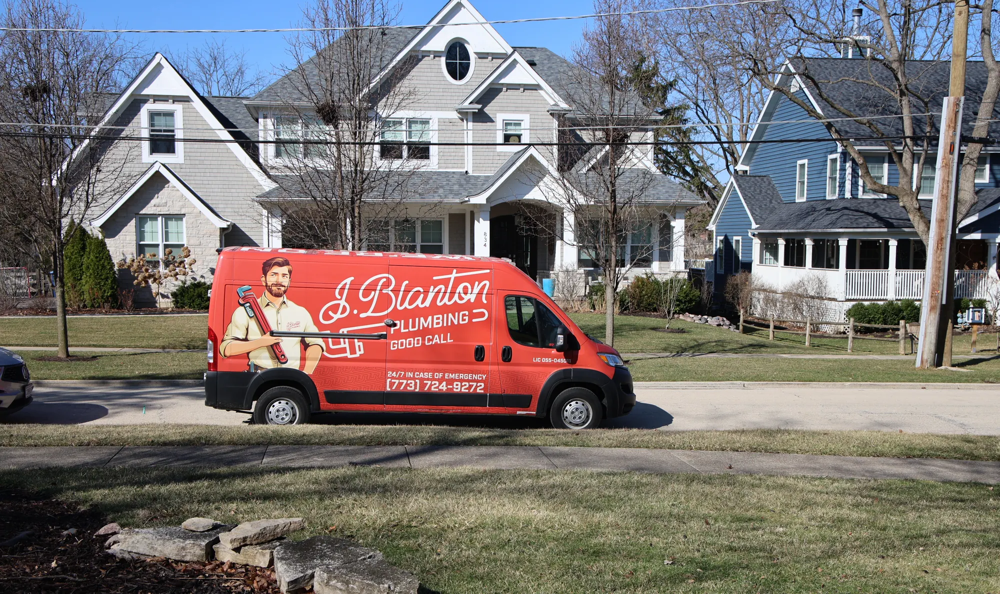
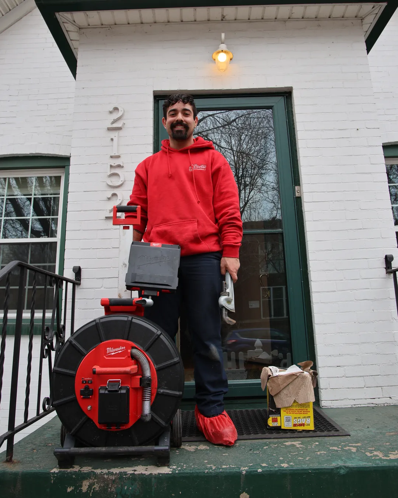

Drain Cleaning
Slow, gurgling or backed-up drains in kitchens, bathrooms and basements.
Learn More
Serving Chicagoland since 1993, now with a local office on Green Bay Road. Our line is open 24/7 for homeowners in Highland Park and across the North Shore. Upfront pricing on every job.
Our licensed plumbers handle everything from a slow drain to a full sewer line repair. Pick a service to see how we handle it in Highland Park.
Slow, gurgling or backed-up drains in kitchens, bathrooms and basements.
Learn More
Tree roots, cracked clay pipe and repeat backups in the line from your house to the street.
Learn More
Repair and replacement for tank and tankless water heaters that leak, make noise or run out of hot water too fast.
Learn More
Burst pipes, sewer backups and no hot water, any time of day or night.
Learn More
Sump pump repair, replacement and battery backups to keep your basement dry through heavy rain and snowmelt.
Learn More
Repair for pipes that froze or burst, from basement water lines to outdoor spigots.
Learn More
Gas line repair, leak detection and gas fireplace service.
Learn MoreAfter serving Chicagoland homeowners for more than 30 years, we decided it was time to put down roots in Highland Park. Our new office is at 1904 Green Bay Rd #B, Highland Park, IL 60035. You get the same service and the same 24/7 availability, just closer to home, so we can get to you faster when you need us.
Highwood, Fort Sheridan, Deerfield, Bannockburn, Riverwoods, Lake Forest, Lake Bluff, Glencoe and more.
The median home in Highland Park was built in 1963, and about 1 in 4 went up before 1940. Add wooded ravines, mature trees and long Lake County winters, and the same few problems keep showing up.
Nearly half of Highland Park homes were built before 1960, often with clay sewer pipe, cast iron drains and galvanized water lines. These materials wear out slowly, until a small leak or a tired water heater turns into a bigger repair.
Highland Park’s ravines and tree-lined streets are hard on sewer lines. Roots grow toward moisture and slip into older pipe through the joints. The first signs are slow drains or a gurgle when the washer empties.
Heavy rain and spring snowmelt can push water into Highland Park basements. A backflow valve stops sewage from coming up through floor drains. A sump pump with a battery backup keeps running when the power goes out. An overhead sewer system lifts basement wastewater above the level where backups happen.
Lake County winters bring long stretches below freezing. Pipes in exterior walls, crawl spaces and outdoor spigot lines freeze first, and they can split and flood a basement once they thaw. If you see water where it shouldn’t be, shut off your main valve and call us 24/7.
We’ve partnered with trusted lenders, so you can get the service you need now and pay on your terms.
Subject to credit approval. Rates and terms vary.
The most common complaint about plumbing companies is simple: you called a plumber and got a salesman. Here’s how we work instead.
Our plumber explains the problem in plain English first. When it’s a drain or sewer issue, we can run a camera down the line so you see what we see. Then you decide.
We give you a flat-rate price before we touch anything. The price we quote is the price you pay, with no surprise add-ons when the job is done.
Our phone line is open around the clock, including weekends and holidays. When water is coming into your basement, we work to get a plumber to your home as soon as we can.

We’ve grown a lot since 1993, but the way we work hasn’t changed. Here’s a closer look at who we are.
4.7 stars from 5,669+ Google reviews across all locations.
“We had a very slow draining issue that would make our whole system gurgle when water drained from the washing machine. […] Initially, Andreas Pastos came out and sent a camera down to evaluate the situation. It was filled with tree roots that had found their way through the joints in the pipes. He gave us several options. Once we decided that hydro jet was our best option, he arranged to have the equipment to sent to our home. Our technician, Kyle Johnson, arrived quickly and thoroughly hydro jetted our sewer line with camera attached so we could see the process.”
“Ron was perfect. He came to do the job at hand and explained various pieces of information along the way that helped me understand the root causes of what we were dealing with and how to avoid problems in the future. […] Didn’t try and push the sale like some companies do, but was more or less educating on what the options were and what they entailed in full so we would know what to expect if we decided to go down those paths.”
“I appreciated that they wore foot coverings when in my house. I was panicked because I’ve previously had substantial water damage in my basement, so having my water spigot line burst and water pouring into my basement, caused a lot concern. Andrew calmly walked me through what he found, answered my questions, and addressed my fears. […] Pricing was upfront and reasonable.”
It depends on the job. The main factors are what’s wrong, how hard it is to reach, the parts or materials needed and the age of your plumbing.
It depends on the job. The main factors are what’s wrong, how hard it is to reach, the parts or materials needed and the age of your plumbing. Older homes with clay or cast iron pipe can take more work to repair the right way. We give you a flat-rate price before any work begins, so you know the cost going in. Give us a call and we’ll walk you through it.
Call us any time, day or night, including weekends and holidays.
Call us any time, day or night, including weekends and holidays. Our Green Bay Road office keeps our plumbers close to Highland Park, and we treat emergencies as a priority. Arrival times depend on the day, but we’ll get a plumber to you as soon as we can.
Yes, and it’s a real risk in a city with as many mature trees as Highland Park.
Yes, and it’s a real risk in a city with as many mature trees as Highland Park. Roots grow toward moisture and slip into sewer lines through cracks and loose joints, especially in older clay pipe. Early signs include slow drains, gurgling and backups in the lowest drain in the house. In Highland Park, homeowners own the private sewer line from the house to the city main, so a root problem there is yours to fix. A camera inspection shows whether roots are the cause, and hydro jetting or a sewer repair can clear them out.
It can be. About 45% of Highland Park homes were built before 1960, and about 1 in 4 before 1940.
It can be. About 45% of Highland Park homes were built before 1960, and about 1 in 4 before 1940. Homes from those years often have clay sewer pipe, cast iron drains or galvanized water lines, and all of them wear out with age. Age alone doesn’t mean something is wrong. An inspection tells you where your system stands, so you can plan repairs instead of reacting to a leak.
Start with three things: a backflow valve on your sewer line, a sump pump with a battery backup, and a regular check of your sewer line for roots and debris.
Start with three things: a backflow valve on your sewer line, a sump pump with a battery backup, and a regular check of your sewer line for roots and debris. For homes with repeat backups, an overhead sewer system lifts basement wastewater above the level where backups happen. We can look at your setup and tell you which option makes sense for your home.
Yes. We’re licensed and bonded in Illinois, and we’ve been serving Chicagoland homeowners since 1993.
Yes. We’re licensed and bonded in Illinois, and we’ve been serving Chicagoland homeowners since 1993.
Along with Highland Park, our office serves Highwood, Fort Sheridan, Deerfield, Bannockburn, Riverwoods, Lake Forest, Lake Bluff, Glencoe and more.
Along with Highland Park, our office serves Highwood, Fort Sheridan, Deerfield, Bannockburn, Riverwoods, Lake Forest, Lake Bluff, Glencoe and more. Our phone line is open 24/7 for all of them.
There’s no fixed schedule, but older homes with mature trees nearby benefit from a camera inspection every few years, or any time you notice slow drains or gurgling.
There’s no fixed schedule, but older homes with mature trees nearby benefit from a camera inspection every few years, or any time you notice slow drains or gurgling. Nearly half of Highland Park homes were built before 1960, often with clay sewer pipe that roots get into more easily. An inspection shows the condition of your line so you can fix small problems early.
Annual Protection Plan
Most plumbing problems in Highland Park start small, like a few roots in the sewer line or a water heater past its prime. The No Drip Club brings a plumber to your home for regular maintenance, so issues get caught early.

Small leaks and slow drains don’t fix themselves. Call us early, and we’ll keep a small problem from turning into a big one.